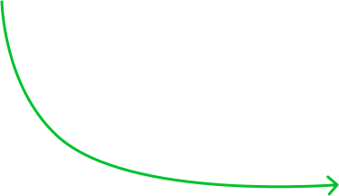
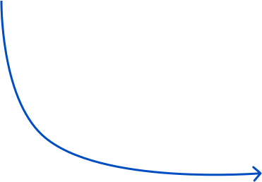
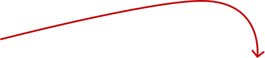
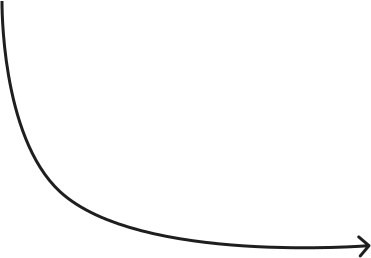

Пластик
Это самая объемная и пугающая новичков категория. Виды пластика звучат как таблица Менделеева, нюансы сбора пугают,польза кажется сомнительной... Рассказываем максимально доступно.
цвет бака
Как называется?
ПЭТ (01): бутылки для напитков и продуктов, емкости для бытовой химии.
ПНД (02): бутылки, канистры, лейки, горшки для цветов, большинство фасовочных пакетиков и пакетов-«маек».
Особенности приёма
Пищевые ПЭТ- и ПНД-упаковки можно сдать практически везде – и в городские контейнеры для вторсырья, и впункты приема.
Пластик, который принимают редко
ПВХ (03): трубы, пленка для натяжных потолков, электроизоляция проводов и кабелей, искусственная кожа, линолеум.
ПВД (04): различные виды пленки (стрейч, пупырчатая, парниковая) и мягкие «маслянистые» (не шуршащие) пакеты.
ПП (05): одноразовые стаканчики, мешки, упаковочная пленка (та, что хрустит и рвется, а не тянется), обертки дляшоколадок и батончиков, трубы, тара.
ПС (06): «мягкие» одноразовые стаканчики, упаковка для овощей и фруктов, упаковочный пенопласт.
Другие пластики (07): весь остальной пластиковый мусор из категории ТБО (твердых бытовых отходов), которыйвозникает в процессе жизнедеятельности человека.
Особенности приема
Обычным жителям нужно либо искать волонтерские организации, которые принимают на сортировку мусора пластик с маркировкой04, 05 и 06 (03 и 07 не принимают практически нигде), либо выбрасывать его в несортируемый мусор.
Макулатура
Это все виды бумаги и картона, пригодные для переработки и дальнейшего использования.
цвет бака
Как подготовить такой мусор?
Сложить максимально компактно, тетрапаки ополоснуть, крышечки снять.
Стекло
Это один из самых экологичных материалов для упаковки – стекло может быть переработано полностью.
цвет бака
Как подготовить такой мусор?
Перед сдачей стеклотару достаточно ополоснуть и снять крышки. Этикетки удалять не обязательно.
Металл
В основном, на переработку принимаются жестяные изделия: чистые консервные банки и металлические крышки. Если вы можете ихразрезать или сжать без риска для себя – сделайте это на стадии сортировки мусора дома.
цвет бака
Особенности приема
К переработке практически везде принимаются алюминиевые банки, которые достаточно ополоснуть и сжать. Остальные видыалюминиевых отходов: фольга, тюбики, одноразовые контейнеры и формы принимаются редко.
Пищевые отходы
Не подлежат сортировке и не принимаются для переработки, хотя и представляют собой значительную часть повседневного мусора
цвет бака
Пищевые отходы нужно либо компостировать (эта роскошь доступна жителям загородных домов), либо измельчать спомощью специальных устройств-диспоузеров (устанавливаются под раковину и соединяются с общедомовой канализацией).